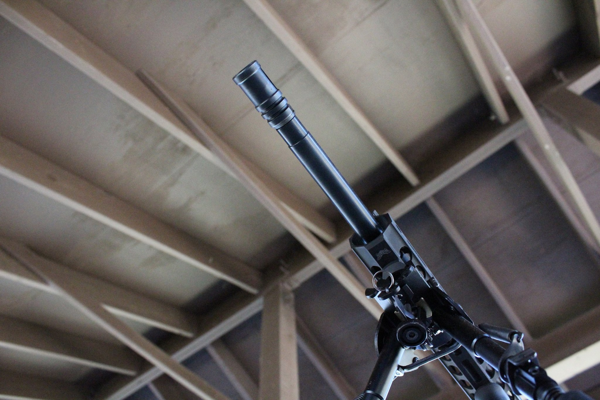
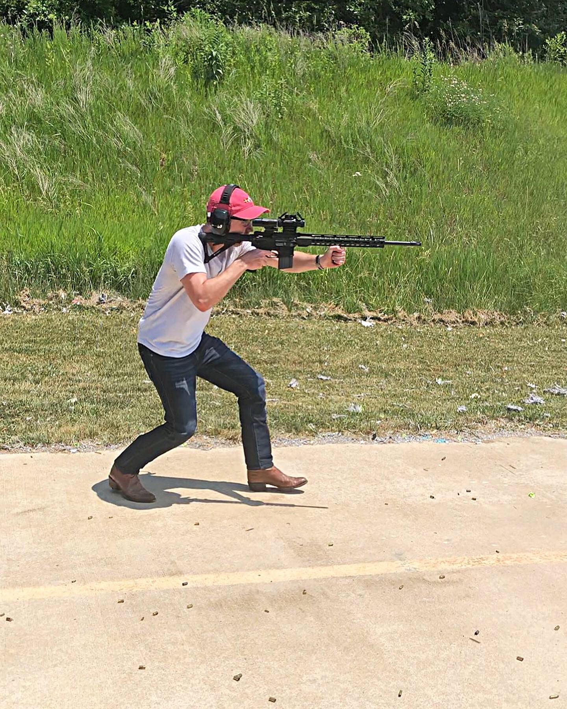
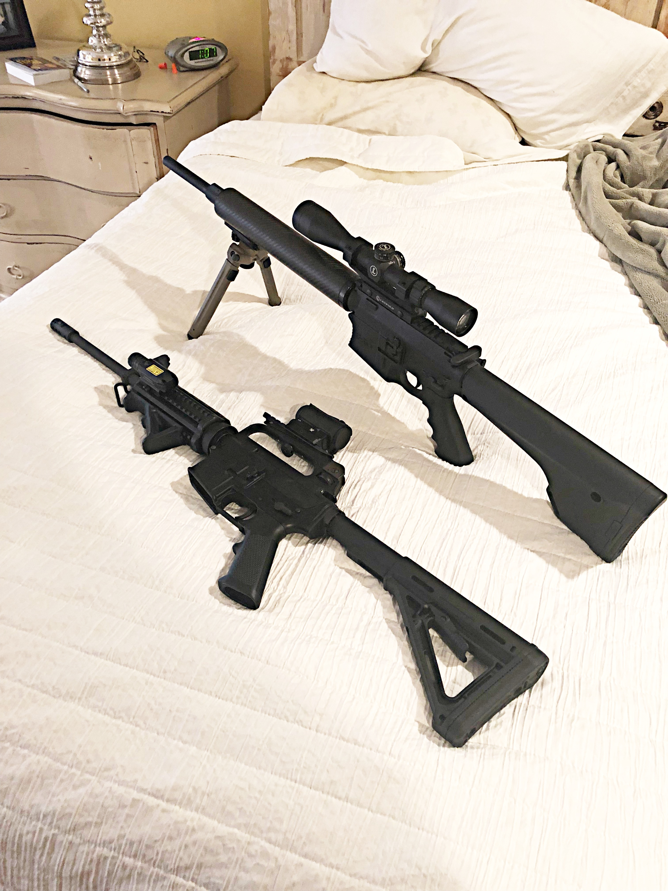
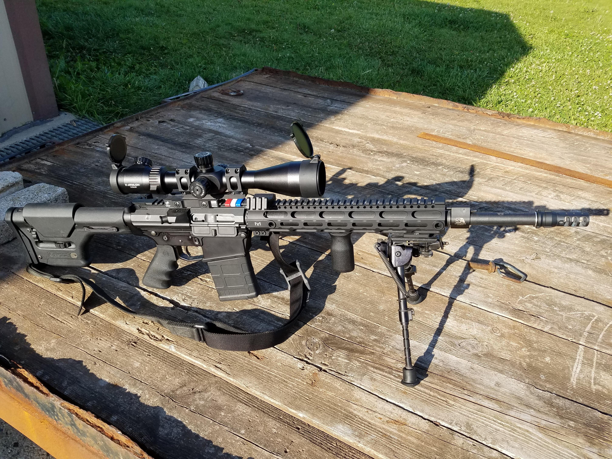
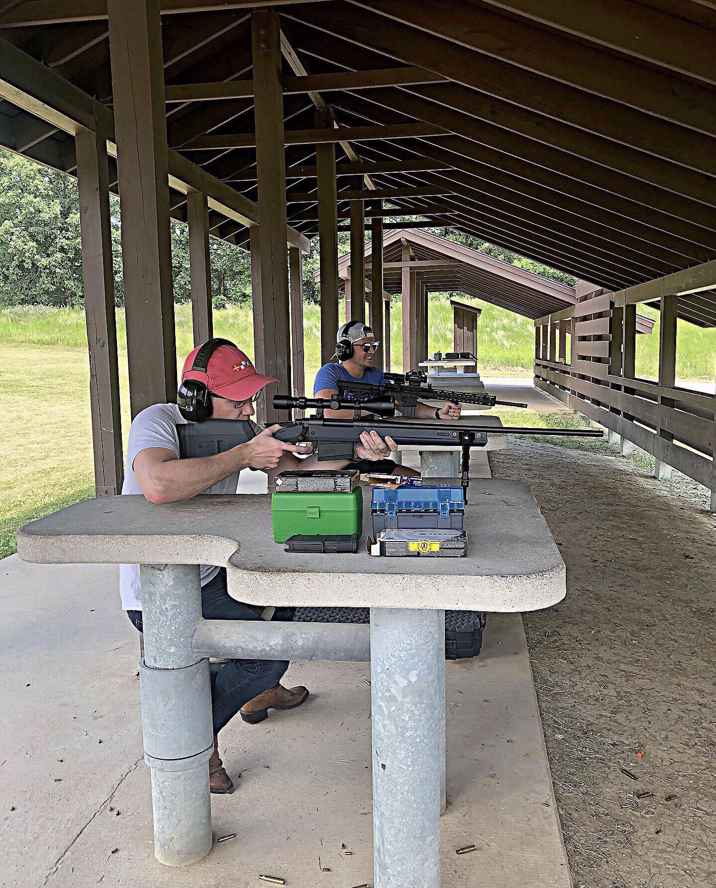
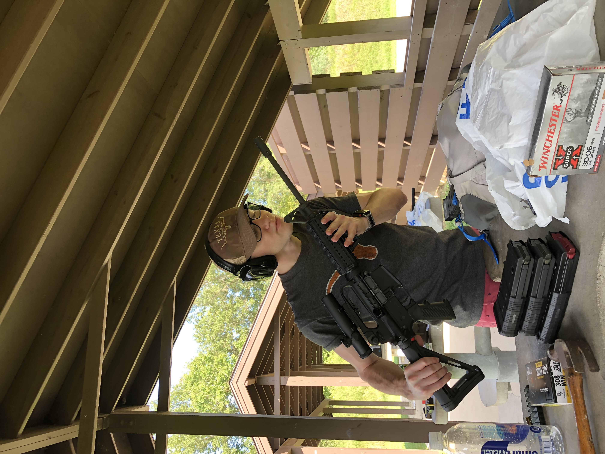
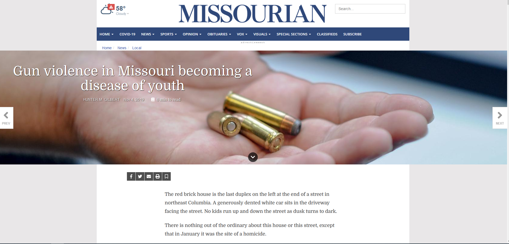

Why I made this

To get to the point: I’m a gun owner. But I’m not JUST a gun owner. I have competed in a kind of competitive shooting called Three-Gun. To be short: you attempt to move through several different sections on a course with three different guns on your person (sometimes you pick them up along the way). At each section you will be presented with a certain amount of targets (paper, metal, etc.) that you will want to shoot as quickly as possible. I’m by no means a professional “shooter,” I just enjoy it as a hobby. I also hunt. I enjoy hunting hogs back in my home state of Texas. I also have hunted Elk and deer in the past.

Here I am practicing for a three-gun competition with one of my rifles.

This specific handgun, a Beretta APX Centurion, is one of the handguns I may choose to conceal carry when permitted too. I have a license to carry for the state of Texas.

Two of my rifles after I cleaned them. The one on top is an AR10 chambered in 7.62x51 NATO. The bottom one is an original Colt AR15A2 made more than 40 years ago.
Lastly, besides shooting targets at a range and hunting: I build guns. I build guns as a sort of hobby. At the same time building your own rifles has its perks.
For starters, you can make it EXACTLY how you want. It is also normally cheaper than buying a pre-built one from a gun company. But the customization factor and the knowledge that you know what to do if anything malfunctions or breaks is worthwhile from a life skill perspective and a monetary perspective in my opinion.
I have different rifles for different purposes. For example, if I’m hunting hogs-- I typically use an AR10 that I myself built by buying the parts I specifically wanted for that rifle.
If I am competing in a three-gun competition the rifle I normally bring is one of the AR15s I have built over the years. Why? It is incredibly light and if I am carrying all of the ammo I will use for three separate guns AND carry two additional guns: weight matters.
But enough bragging on my end. Some reporters that cover gun violence have never held a gun, let alone fired one. That is completely fine. I do not “look down” on reporters that cover gun violence or mass shootings, etc. Firearms aren’t for everyone and that is okay. At the same time I feel that having first-hand knowledge about something can help.

This is one of the first AR15's I ever built.

I enjoy shooting with my friends and have taught many how to shoot for the first time(along with proper safety). I'm holding my Remington M24 at a gun range near Columbia.

This rifle is older than me. This is another Colt AR15a2 that I own.
That is what this resource is about. The goal was to try to right down terms, definitions, tricks to getting records, etc. that are all up in my head that I take for granted. Why? Because getting the facts and story right matters. On top of this, if you get these terms right you won’t be harassed by some commenter for getting it wrong (if that matters to you).
You might only use 5% of what I have thrown into this resource. Hell, you might never use any of it after reading through it. I just wanted to offer something that was not only correct but also had a sort of personal touch to it. I never intended for this to read like a manual.
But, it doesn’t take a lot of searching to see how poorly reporters and politicians have discussed gun terminology and nomenclature-- on both sides of the aisle.
Maybe it is to strike fear in people that these “weapons of war” that have existed for decades and in some cases over 100 years do not deserve to have a place in our society even though mass shootings to the likes of the ones we have seen the past decade came more than 100 years after the first semi-automatic rifle was produced (the AR-15 is a semi-automatic rifle).

On the other end of the spectrum, politicians may misuse terms in order to make folks fear that the government is going to ban all guns and institute some kind of authoritarian regime. They may even believe that all gun laws are an infringement. You’ll probably note that I have kept politics in this to a minimum until now. That was done on purpose. This is a resource to potentially help your reportering, not a manifesto.
I have no issue whatsoever if you are a reporter that believes all guns should be banned.You are your own person and you have the right to believe whatever you want. I just wanted to offer a sort of resource that is accessible to any reporters: whether you own guns or not.
That’s it.
If you have any pressing questions or would want to maybe know more you can find my contact info on the homepage. Obviously, I care about this topic so don’t feel like you are bothering me for reaching out.
“....I believe that clear thinking and clear statement, accuracy and fairness are fundamental to good journalism.
I believe that a journalist should write only what he holds in his (her/there) heart to be true.
I believe that suppression of the news, for any consideration other than the welfare of society, is indefensible….”
-Walter Williams